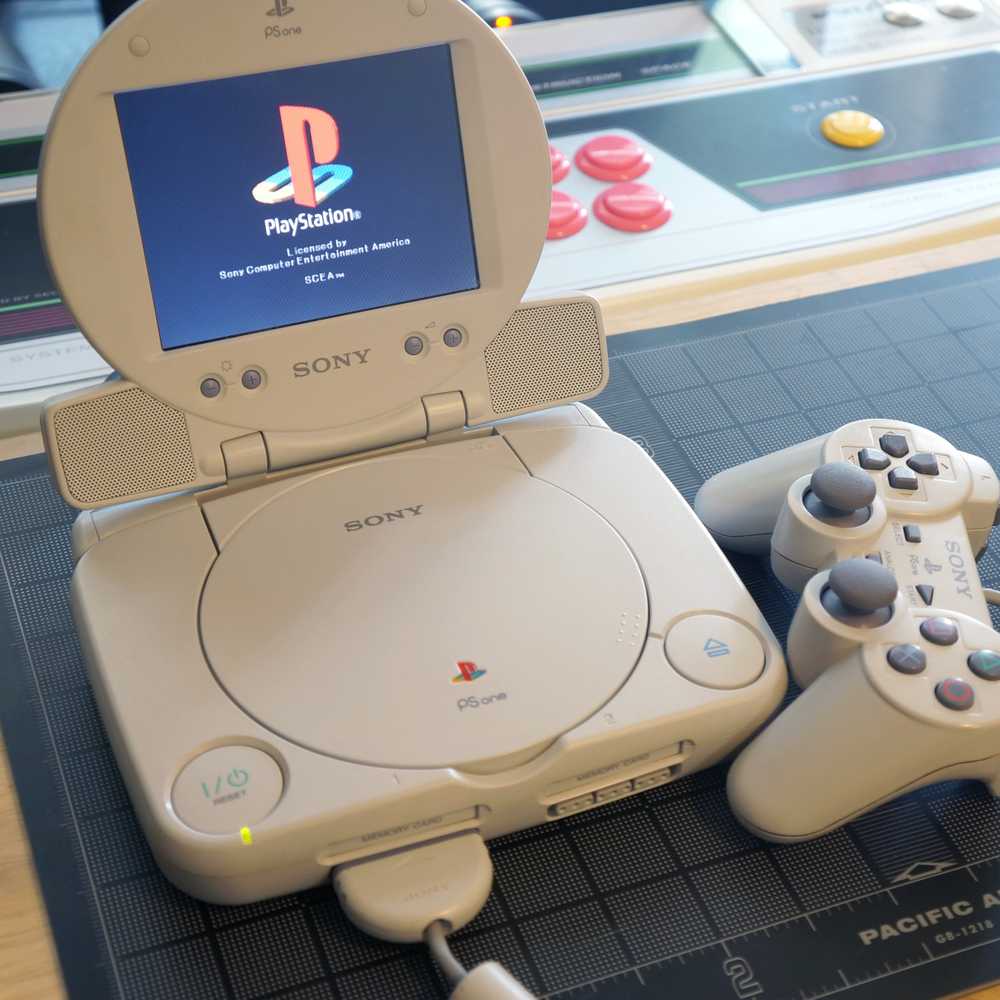
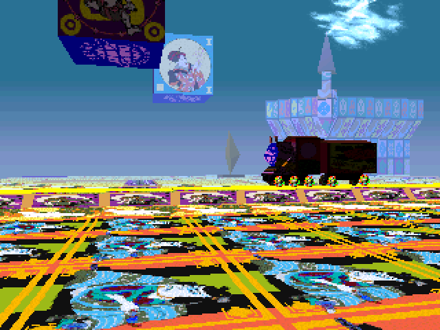
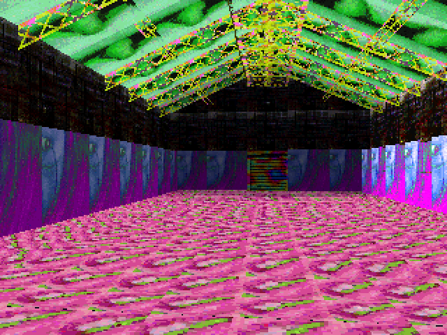
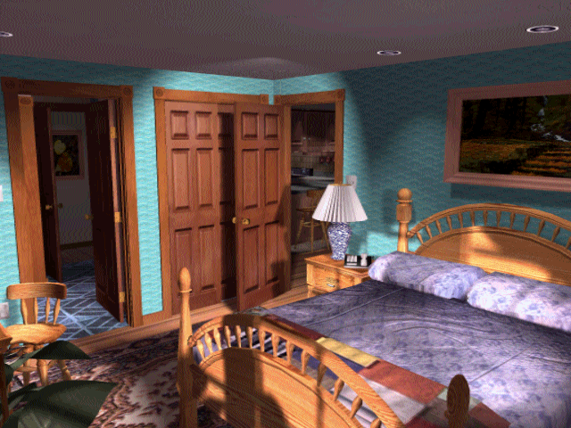
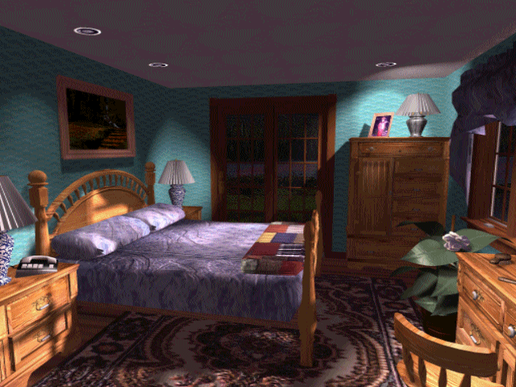
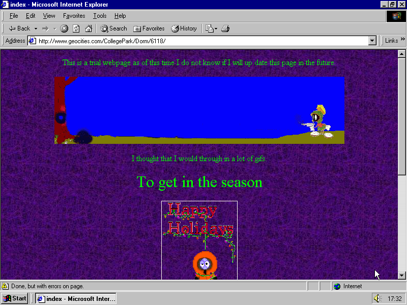
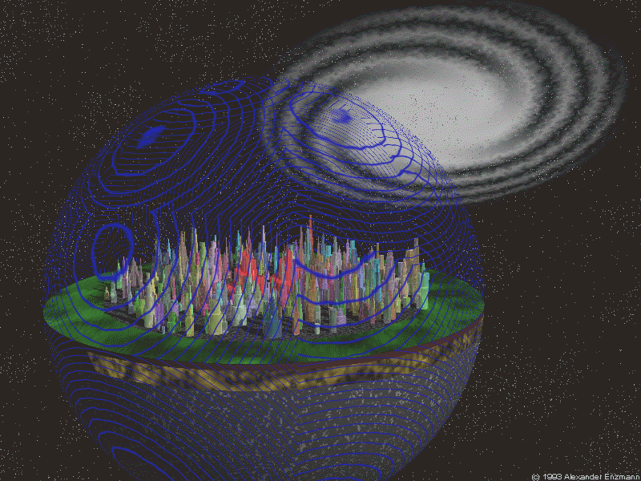
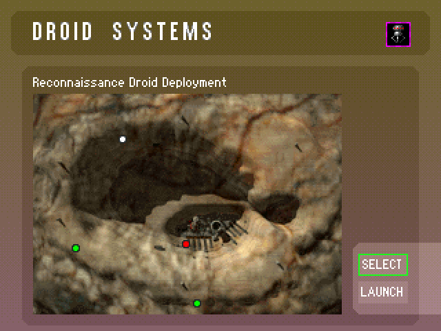

3





A Christmas that assuredly never happened. Except in clip art. (SO00177_.WMF, created August 11, 1997; clip art included with Microsoft Works 4.5.)

NCSA Mosaic Throbber (one of the first, if not THE first user interface “throbbers”)

Editing an HTML page in an early editor (HoTMeTaL Pro) while previewing in NCSA Mosaic

NCSA Mosaic 1.0 (MacOS)
NCSA Mosaic ▰ The first popular web browser, it was named for its support of multiple Internet protocols (WWW, FTP, NNTP, Gopher). Although Netscape Navigator was developed by many of the original Mosaic authors, it doesn’t share any code with Mosaic as commonly thought. Released ☯93JAN

Soft Computing: Art & Design ▰ Cover of book by Brian Reffin-Smith ☯85 | “An exploration of the role of compuers in art and design”

Photonix II ▰ Screenshot of software for Apple IIGS by FTA ☯93 | “If you need to back up 3.5" disks, you don’t need to look much further than Photonix II.”

“Phreaking and Hackers Club” application ▰ From USENET ☯92APR

Island Telecommunications ▰ Created in ProPaint (Amiga) ☯85

OFFICE.GIF, retrieved via the GIF Galaxy shareware CD (1993) via cd.textfiles.com. Artist credit appreciated.

Ray-traced graveyard. (GRAVE.GIF, retrieved via the GIF Galaxy shareware CD (1993) via cd.textfiles.com. Artist credit in bottom right: “CAT Designs ‘92”.)

BATCAV.GIF, retrieved via the GIF Galaxy shareware CD (1993) via cd.textfiles.com. Artist credit appreciated.
CANAL.GIF, from the Eagle Eye CD-ROM BBS Network (CAP Enterprises, May 1993), retrieved via cd.textfiles.com. Artist info appreciated.

COMCLOSE.JPG, retrieved from the Multi-Media Plus CD from Knowledge Media, Inc. (November 1994) via cd.textfiles.com. Image credit says “Comet,” further info appreciated.


we go together
The future, mid-’90s edition. (A021429A.BMP, created October 2, 1995. Retrieved via the Bill Gates: The Road Ahead CD.)




A bedroom, from many angles, computer-generated. Images retrieved via the GIF Galaxy shareware CD (1993) via cd.textfiles.com. Artist credit appreciated!

POURS.GIF, retrieved via Walnut Creek’s GIFs Galore CD via cd.textfiles.com. Date is 1988; artist signature on lower right, begins with A, more info appreciated!


the Myst Screen Saver CD-ROM was a full-featured screensaver for Windows 3.1 that was released in 1995. Made by After Dark, the same folks that made the famous Flying Toasters screensaver, this disk would install both the After Dark engine as well as around 250 images from Myst.
First, let’s talk about the engine itself. Windows 3.1 didn’t have built-in screenshot functionality, and this engine had a lot of the features that are built-in to every OS nowadays. After a set amount of time, it would begin to display one of the several slideshow options (options like Selenitic Age, Highlights, and New Views) which had between 22 and 35 images each. There were also options for sound along with the slideshow, but I wasn’t able to get any sounds to play, and couldn’t find any on the disk. Either the sound is an esoteric and ancient format that I couldn’t get working, or the sound options are just something built into their engine.
There was also a password protect option, which was pretty cool at the time. However, you could get around it just by booting into DOS (remember, this is windows 3.1, which was installed on top of DOS) and deleting the config file. It even walks you through this process in the instruction booklet, so that’s one hell of a security hole.
The last option set was an energy saver, which could put your computer to sleep and shut off your monitor after a certain amount of time. Back then, every computer used a CRT, which uses no small amount of energy. it would even calculate your savings per year, although this required knowing the wattage of your monitor (or having one of the dozen or so monitors in it’s database.)
My biggest gripes with this software are that the slideshows are RIFE with spoilers, and I couldn’t actually get the screensaver to start without crashing Windows entirely. (Nevermind the pain in the butt it was to get DOS 6, Win 3.11, and a CD driver all loaded when I don’t have a floppy drive). Also, the one D’ni slide is labelled “Dunny”…
If you want to mess around with it, I’ve hosted the CD image here. It’s tiny.
https://dl.dropboxusercontent.com/u/44459847/Forum/MYST_SS.ISO
Yes, it does ask for a CD key, which was printed inside the instruction booklet.
MSS-00670-6681
Now, the images themselves are the real meat of the disk. Most of them are just screenshots from the game. While none of them contain actual puzzle solutions, there are a great deal of them which spoil parts of the game, because most of the game is locked behind puzzles. Also, each one contains a two-line label at the bottom, but the exact alignment of the text changes from slide to slide, which leads me to believe that they were not made using a template but instead hand-labelled in an image editor.
There are, however, two slideshows of great interest: New Views and Making of Myst. New Views contains a whole host of new renders, most of which I have not seen anywhere else, while Making of Myst contains concept art and wireframe views of final scenes. Both are worth looking through, for sure
Click here for the New Views images
Click here for the Making of Myst images
Click here for every image on the disk
I want these new renders and such to be passed around as much as possible so they aren’t lost like tears in rain, so feel free to repost any of this wherever you want.
Edit: fixed an image Tumblr overcompressed

MTD1.GIF, retrieved via S&S Enterprises’ InterNet Connection CD (Dec. 1992 via cd.textfiles.com. Artist info appreciated.

From Flying Colors

From a demo for CustomHome

BEAC01.GIF retrieved via Walnut Creek’s GIFs Galore CD via cd.textfiles.com. Artist: Betsy Greuf.


Toy versions of the characters as seen in the Crane Game minigame in Mario Party.

TEETH.GIF, retrieved from the Carat Clipart Collection (1997), via cd.textfiles.com. Artist: Andrew Zmievsky, date 1994.

TURTLE GIF, retrieved from the Carat Clipart Collection (1997), via cd.textfiles.com. Artist credit: “Miller ‘94.” Further details appreciated.

Two 3D landscapes. (FLYER01.GIF and FLYER02.GIF, retrieved via the GIF Galaxy shareware CD (1993) via cd.textfiles.com. Artist initals/date C.J.C. 1992; further info appreciated.)

original url http://www.geocities.com/CollegePark/Dorm/6118/
last modified 1999-10-08 00:21:59

CTYFLT.GIF: retrieved from the Carat Clipart Collection (1997), via cd.textfiles.com. Artist credit in lower right: Alexander Enzmann, 1993.

Payette Inn. From Backpacker

Library. From Astrology Source

Reconnaissance Droid Deployment. From Defcon 5


Doom
E2M7: Spawning Vats1993 - by Tom Hall and Sandy Petersen